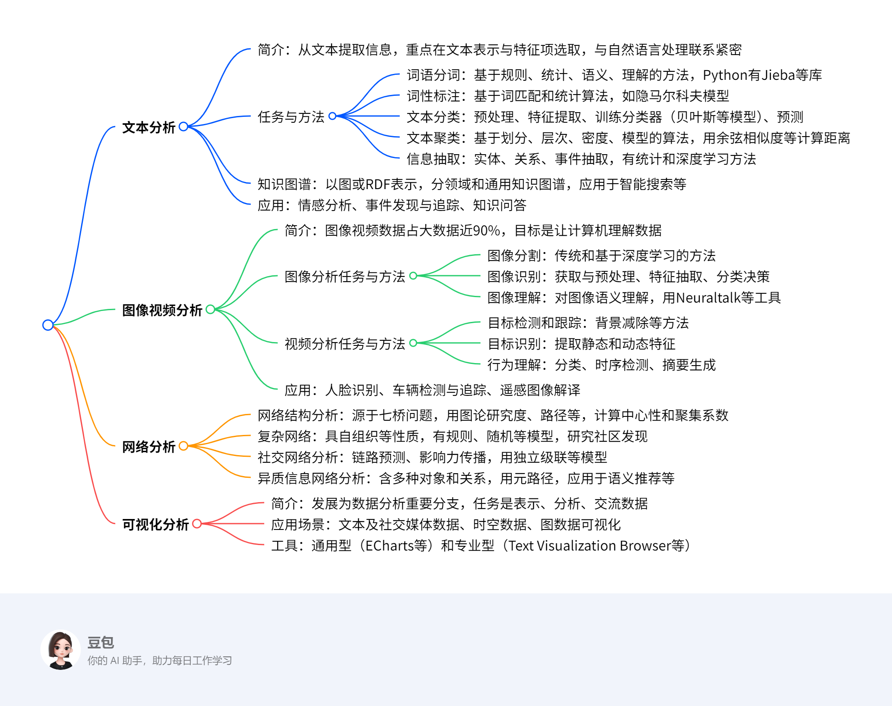

第七章：数据科学的重要研究领域¶
总览¶
一段话总结¶
文档围绕数据科学的重要研究领域展开，指出数据分为结构化、半结构化和非结构化三类，其中非结构化数据占比达80%，其处理需不同模式。重点介绍了文本分析（含分词、分类、信息抽取等任务及知识图谱应用）、图像视频分析（包括分割、识别、理解等任务及人脸识别等应用）、网络分析（涵盖结构分析、复杂网络、社交网络等分析）和可视化分析（涉及文本、时空、图数据可视化及ECharts等工具）四大领域的任务、方法及应用，展现了数据科学在多领域的重要价值与实践。
思维导图¶

详细总结¶
一、数据科学背景¶
- 数据分类：结构化数据、半结构化数据、非结构化数据，其中非结构化数据占比80%，其规模和复杂性不适用结构化数据的统一处理模式。
- 知识体系结构：涉及统计学、数据可视化等多领域，主要研究数据科学基础理论、数据预处理、数据分析与计算和数据管理等。
二、文本分析¶
（一）简介¶
- 也称文本挖掘，是从文本中提取信息的过程，重点在文本表示和特征项选取，与自然语言处理相互包含。
- 背景：80%的商业信息来自非结构化文本数据，目标是挖掘文本价值。
（二）任务与方法¶
| 任务 | 方法 |
|---|---|
| 词语分词 | 基于规则（最大匹配法等）、统计（隐马尔科夫模型等）、语义、理解的算法，Python有Jieba、SnowNLP等库 |
| 词性标注 | 基于词匹配的字典查找算法和基于统计的隐马尔科夫模型等 |
| 文本分类 | 流程包括预处理（切分、分词、去停用词）、特征提取（词袋模型等）、训练分类器（贝叶斯等模型）、预测 |
| 文本聚类 | 流程有预处理、特征提取、聚类算法（k-means等）、调参，用余弦相似度等计算距离 |
| 信息抽取 | 实体抽取（统计和深度学习方法，如LSTM）、关系抽取（人工、有监督等方法）、事件抽取（模式匹配等方法） |
（三）知识图谱¶
- 起源于2012年Google发布的“Google Knowledge Graph”，有图网络和RDF两种表示形式。
- 类型：领域知识图谱（如医疗卫生领域SIDER）和通用知识图谱（如Cyc）。
- 应用：智能搜索、智能推荐、人机交互、数据分析与决策。
（四）应用¶
- 情感分析：抽取情感信息、分类、检索与归纳。
- 事件发现与追踪：切分信息内容、检测和追踪事件。
- 知识问答：分为一问一答等形式，有基于语义解析和搜索排序的方法。
三、图像视频分析¶
（一）简介¶
- 图像视频数据在大数据中占比接近90%，目标是让计算机从数据中提取特征理解世界，应用于公安、医疗等领域。
（二）图像分析任务与方法¶
- 图像分割：传统方法有基于阈值等，深度学习方法有基于特征编码等。
- 图像识别：流程包括获取与预处理、特征抽取（SIFT等）、分类决策（支持向量机等）。
- 图像理解：对图像语义理解，用Neuraltalk等工具描述图像。
（三）视频分析任务与方法¶
- 目标检测和跟踪：用背景减除、时间差分等方法。
- 目标识别：提取静态（借鉴图像特征）和动态特征（深度编码器等）。
- 行为理解：分类、时序检测、摘要生成。
（四）应用¶
- 人脸识别：利用唯一性等特点，流程包括采集、预处理、特征提取、识别。
- 车辆检测与追踪：检测识别车牌，用YOLO等算法追踪。
- 遥感图像解译：目视解译和计算机解译。
四、网络分析¶
（一）网络结构分析¶
- 源于1736年欧拉的七桥问题，网络由节点和边组成，用图论研究度、路径、中心性（度中心性等）、聚集系数等。
（二）复杂网络¶
- 定义：具有自组织等部分或全部性质的网络。
- 模型：规则、随机、小世界、无标度、自相似网络等。
- 社区发现：模块度衡量划分质量，算法有KL算法等。
（三）社交网络分析¶
- 链路预测：基于节点相似性、概率模型、似然函数的模型。
- 影响力传播：度量方法有度中心性等，模型有独立级联模型等，目标是最大化影响力。
（四）异质信息网络分析¶
- 定义：含多种类型对象或关系的有向图，用网络模式和元路径描述。
- 应用：语义推荐（如电影推荐）、套现用户检测。
五、可视化分析¶
（一）简介¶
- 最早诞生于17世纪，发展为数据分析重要分支，任务是表示、分析、交流数据。
（二）应用场景¶
- 文本及社交媒体数据：词云、树状图等可视化形式，分析用户行为和信息传播。
- 时空数据：如交通数据可视化，探索运行状况等。
- 图数据：边绑定和拓扑简化方法处理大规模网络。
（三）工具¶
| 类型 | 工具 |
|---|---|
| 通用型 | ECharts、PyeCharts、Matplotlib、Bokeh |
| 专业型 | Text Visualization Browser、Treevis、Gephi、Pajek、UCINET |
关键问题¶
（一）文本分析中信息抽取的主要任务有哪些？¶
信息抽取的主要任务包括实体抽取，即检测和分类实体；关系抽取，刻画命名实体间的关系，形成三元组；事件抽取，抽取事件实例、识别类型并抽取论元赋予角色。
（二）图像视频分析在实际生活中有哪些具体应用？¶
在实际生活中，图像视频分析有诸多应用。如人脸识别，可用于人脸搜索、聚类等；车辆检测与追踪，能实现车牌识别和特定对象追踪；遥感图像解译，可通过目视和计算机解译分析地物或现象。
（三）网络分析中的社区发现算法主要有哪些类型？¶
社区发现算法主要有全局方法，如KL算法、GN算法、谱聚类算法等；局部方法，包括基于局部模块度方法、R方法；随机游走方法，如随机游走、Markov链；模块度方法，像Newman算法、Louvain算法、谱方法；密度子图方法，例如Clique、Biclique、最密集子图等。
7.1 文本分析¶
7.1.1 文本分析简介¶
定义与研究重点¶
- 定义：文本分析也称文本挖掘，是从文本中提取信息的过程，核心在于文本表示与特征项选取，通常通过对特征词量化实现文本表示。
- 与自然语言处理的关系：两者界限模糊，相互包含、影响，类似“数据挖掘”与“数据科学”的关系。
背景与意义¶
- 背景：80%的商业信息来自非结构化文本数据，如何挖掘文本价值是核心目标。
- 意义：在销售行业可分析用户评论优化产品；新闻行业可追踪事件；金融行业可实现客户分类；文学领域可发现写作风格。
7.1.2 文本分析的任务与方法¶
词语分词¶
- 任务：将文本切分为单词，是文本分析的预处理步骤🔶1-65🔶。
- 方法：
- 基于规则：如最大匹配法（从左到右查找词典中最长匹配词）、逆向最大匹配法。
- 基于统计：隐马尔科夫模型（HMM）、最大熵模型等，通过概率统计建模分词。
- 基于语义：特征词库法、邻接约束法，结合语义信息切分。
- 基于理解：神经网络分词法、专家系统分词法，模拟人类语言理解。
- Python工具：Jieba（支持三种分词模式及自定义词典）、SnowNLP（自带训练字典）、THULAC（中文文本挖掘专用）。
例子：用Jieba分词“我爱自然语言处理”
1. 导入Jieba库：import jieba
2. 分词：jieba.lcut("我爱自然语言处理")
3. 结果：['我', '爱', '自然语言处理']
词性标注¶
- 任务：为单词标注词性（如名词、动词），是文本处理的基础技术。
- 方法：
- 基于词匹配：查词典标注词性，简单但无法解决一词多义。
- 基于统计：隐马尔科夫模型（HMM），通过状态转移概率和输出概率建模。
- 例子：用HMM标注“我吃饭”的词性
- 状态集：{代词，动词，名词}
- 观测序列：我、吃、饭
- 计算状态转移概率（如代词→动词的概率）和输出概率（如“我”作为代词的概率）
- 用维特比算法求解最可能的词性序列：代词、动词、名词
文本分类¶
- 任务：将文档划分到预定义类别，如垃圾邮件识别、情感分析。
- 流程：
- 预处理：切分、分词、去停用词。
- 特征提取：词袋模型（统计词频）、词向量模型（如Word2Vec）。
- 训练分类器：贝叶斯模型、随机森林、支持向量机。
- 例子：用朴素贝叶斯分类垃圾邮件
- 预处理：将邮件分词并去停用词，如“促销”“打折”“立即购买”
- 特征提取：构建词袋向量，统计关键词出现频率
- 训练模型：计算垃圾邮件中各词的概率（如“促销”出现的概率）
- 预测：输入新邮件，计算属于垃圾邮件的概率，若超过阈值则判定为垃圾邮件
文本聚类¶
- 任务：将相似文档划分为簇，同一簇内相似度高，簇间相似度低。
- 算法：
- 基于划分：k-means算法（指定簇数，迭代更新中心点）。
- 基于密度：DBSCAN算法（基于密度识别簇）。
- 距离计算：余弦相似度（如向量夹角越小，相似度越高）。
- 例子：用k-means聚类新闻文档
- 预处理：提取文档关键词并向量化
- 设定k=3（簇数），随机初始化3个中心点
- 计算每个文档到中心点的余弦距离，分配到最近的簇
- 重新计算各簇中心点，迭代直至中心点稳定
信息抽取¶
- 任务：从文本中提取实体、关系、事件，形成结构化数据。
- 子任务与方法：
- 实体抽取：命名实体识别（如人名、地名），方法包括基于统计的N-gram模型、基于深度学习的LSTM。
- 关系抽取：刻画实体间关系（如三元组），方法有基于规则（人工定义“is-a”）、有监督（条件随机场）。
- 事件抽取：提取事件类型、触发词、论元，如从“摄影师在Baghdad死亡”中抽取事件类型“死亡”，论元“摄影师”“Baghdad”。
7.1.3 知识图谱与文本分析¶
知识图谱简介¶
- 定义：起源于Google 2012年发布的“Knowledge Graph”，以图网络（节点为实体，边为关系）或RDF三元组形式表示。
- 类型：
- 领域知识图谱：如医疗卫生领域SIDER、影视领域IMDB。
- 通用知识图谱：如Cyc、ConceptNet，包含海量常识知识。
应用¶
- 智能搜索：如Google搜索直接返回实体关系结果。
- 智能推荐：基于用户-物品关系网络推荐内容。
- 例子：菜品知识图谱中，“火锅”属于“菜系”，关联“烹饪方法”（炖、炸）和“食材”（牛肉、海鲜）。
7.1.4 文本分析的应用¶
情感分析¶
- 任务：分析主观性文本的情感倾向，包括情感信息抽取（评价词、对象、观点持有者）、分类（正面/负面）、检索归纳。
- 例子：分析用户评论“这款手机屏幕清晰，但电池续航差”
- 抽取评价词：“清晰”（正面）、“差”（负面）
- 评价对象：“屏幕”“电池续航”
- 分类：整体情感倾向为中性（正面+负面）
事件发现与追踪¶
- 任务：切分新闻流数据、检测新事件、追踪事件发展，如“波音737事件”的热点主题演变分析。
知识问答¶
- 形式：一问一答、交互式问答、阅读理解。
- 方法：
- 基于语义解析：将问句转为结构化查询（如“谁是爱因斯坦？”→查询“爱因斯坦”实体信息）。
- 基于搜索排序：搜索候选答案并排序，如百度知道的问答匹配。
7.2 图像视频分析¶
7.2.1 图像视频分析简介¶
背景与意义¶
- 背景：图像和视频数据占大数据总量的90%以上，蕴含丰富信息，目标是让计算机具备感知和理解视觉世界的能力。
- 意义：人类无法快速处理海量视觉数据，该技术广泛应用于公安（如人脸识别）、医疗（如医学影像诊断）、商业（如“淘立拍”商品识别）等领域。
7.2.2 图像分析的任务与方法¶
图像分割¶
- 任务：将图像分解为物体和子区域，分为语义分割（标注像素类别）、实例分割（区分同类不同物体）、全景分割（兼顾前两者）。
- 方法：
- 传统方法：
- 基于阈值：按像素灰度值划分（如Otsu算法自动计算最佳阈值）。
- 基于边缘检测：用Canny、Sobel算子提取物体边界。
- 深度学习方法：
- FCN（全卷积网络）：通过反卷积层将特征图上采样为分割结果，适用于语义分割。
- Mask R-CNN：在目标检测基础上增加分割分支，实现实例分割。
- 例子：用FCN进行语义分割步骤：
- 输入图像通过卷积层提取特征（如VGG16骨干网络）。
- 特征图经反卷积层上采样至原图尺寸。
- 每个像素输出类别概率，生成语义分割掩码（如区分“道路”“车辆”“行人”）。
图像识别¶
- 任务：对分割后的物体进行分类，流程包括图像获取、预处理、特征提取、分类决策。
- 方法：
- 特征提取：
- 传统特征：SIFT（尺度不变特征变换）、HOG（方向梯度直方图）。
- 深度学习特征：用ResNet、DenseNet等卷积神经网络提取层次化特征。
- 分类算法：支持向量机（SVM）、神经网络（如CNN）。
- 例子：用CNN识别手写数字（MNIST数据集）：
- 输入28×28灰度图像，通过卷积层（如3×3卷积核）提取边缘特征。
- 池化层降维，全连接层整合特征。
- softmax层输出10个类别概率，取最大值作为识别结果（如数字“5”）。
图像理解¶
- 任务：对图像进行语义描述，如生成自然语言句子。
- 方法：基于深度学习的图像描述模型（如NeuralTalk、NeuralBabyTalk），结合CNN提取图像特征，RNN生成文本。
- 例子：NeuralBabyTalk描述图像“一个金发男孩穿蓝衬衫吃巧克力”：
- CNN提取图像中“男孩”“衬衫”“巧克力”等物体特征。
- RNN按顺序生成单词，通过注意力机制聚焦图像区域（如男孩的动作）。
- 输出连贯句子，如“A young boy in blue shirt is eating chocolate”。
7.2.3 视频分析的任务与方法¶
目标检测与跟踪¶
- 任务：从视频中分离目标并持续跟踪，如监控中的行人检测。
- 方法：
- 背景减除：建立背景模型（如高斯混合模型），将当前帧与背景对比提取运动目标。
- 光流法：基于像素运动向量估计目标位移，如Lucas-Kanade光流。
- 例子：用高斯混合模型检测运动车辆：
- 初始化背景模型，统计像素值分布（如RGB三通道的高斯分布）。
- 新帧到来时，计算像素与背景模型的匹配度，不匹配则标记为前景（车辆）。
- 动态更新背景模型，适应光照变化。
目标识别¶
- 任务：分析视频中目标的类别，需结合时空特征。
- 方法：
- 静态特征：沿用图像识别的CNN特征（如ResNet提取外观特征）。
- 动态特征：用LSTM、3D CNN捕捉时间维度运动信息（如行人行走姿态）。
- 例子：用3D CNN识别视频中的“跑步”动作：
- 输入连续视频帧（如16帧组成的视频片段）。
- 3D卷积核同时处理空间（帧内）和时间（帧间）维度，提取运动特征。
- 全连接层分类动作类别（如“跑步”“走路”）。
行为理解¶
- 任务：让计算机理解视频中的动态行为，如“开门”“喝水”。
- 方法：
- 时序行为检测：定位视频中行为的开始和结束时间，并分类。
- 视频摘要生成：提取关键帧或片段，压缩视频内容。
- 例子：时序行为检测流程（如“打电话”动作）：
- 视频分帧，用I3D网络提取每帧特征。
- 滑动窗口分析特征序列，预测每个窗口内的行为概率。
- 结合CRF（条件随机场）优化时序连续性，输出“打电话”的起始和结束时间点。
7.2.4 图像视频分析的应用¶
人脸识别¶
- 特点：唯一性、非接触性，流程包括图像采集、预处理、特征提取、匹配。
- 方法：
- 特征提取：用FaceNet等模型生成128维人脸特征向量。
- 匹配：计算特征向量的余弦相似度，阈值判断是否为同一人。
- 例子：门禁系统人脸识别步骤：
- 摄像头采集人脸图像，对齐（如双眼定位）。
- 预处理：灰度化、直方图均衡化，消除光照影响。
- FaceNet提取特征向量，与数据库中注册的特征对比。
- 相似度＞0.8则开门，否则拒绝。
车辆检测与追踪¶
- 任务：识别车牌并跟踪车辆，用于交通监控。
- 方法：
- 车牌识别：YOLOv5检测车牌区域，OCR识别字符。
- 车辆追踪：DeepSORT算法结合外观特征（如颜色、车型）和运动轨迹。
- 例子：高速路口车辆追踪：
- YOLOv5实时检测过往车辆，定位车牌。
- OCR识别车牌字符（如“京A12345”），记录时间戳。
- DeepSORT通过车辆特征（如车身颜色、轴距）跟踪同一车辆，统计行驶轨迹。
遥感图像解译¶
- 任务：分析遥感图像中的地物（如农田、建筑），分为目视解译和计算机解译。
- 方法：
- 计算机解译：用U-Net等语义分割模型识别地物类别。
- 例子：农田面积统计：
- 输入高分遥感图像（分辨率1米）。
- U-Net模型分割“农田”“建筑”“道路”等类别。
- 统计农田类别像素数，乘以单像素面积（1m×1m），得到农田总面积。
7.3 网络分析¶
7.3.1 网络结构分析¶
基本概念与图论基础¶
- 起源：最早源于1736年欧拉解决的七桥问题，网络由节点（实体）和边（关系）组成。
- 核心概念：
- 度：无向图中节点的边数，有向图中入度与出度之和。
- 路径与平均路径长度：两节点间最短路径的平均值，反映网络“紧密度”。
- 网络密度：实际连接数与可能连接数的比值，公式为 \(d(g) = \frac{|E|}{C_{n}^{2}}\)。
节点中心性度量¶
- 度中心性：衡量节点的连接影响力，公式为 \(C_D = \frac{Degree(v)}{n-1}\)，节点度越高，传播信息能力越强。
- 紧密中心性：关注节点到其他节点的平均距离，公式为 \(C_C = \frac{\sum_{t \in V \backslash v} d_p(v,t)}{n-1}\)，距离越小，节点越接近网络中心。
- 中介中心性：计算节点在最短路径中的参与度，公式为 \(C_B = \frac{\sum_{j \neq k \neq v} \frac{|d_p^v(j,k)|}{d_p(j,k)}}{C_{n-1}^{2}}\)，值越高，节点在信息传递中越关键。
聚集系数¶
- 全局聚集系数：衡量网络中“三角形”结构的比例，公式为 \(\frac{闭三元组数量}{闭三元组数量+开三元组数量}\)。
- 局部聚集系数：节点邻居形成完全图的紧密程度，无向图公式为 \(C_i = \frac{2|e_{jk}|}{k_i(k_i-1)}\)，有向图为 \(C_i = \frac{|e_{jk}|}{k_i(k_i-1)}\)。
例子：无向图G的指标计算¶
- 图结构：11个节点，13条边，以节点v7为例：
- 度中心性：\(Degree(v7)=3\)，\(C_D=3/(11-1)=0.3\)。
- 紧密中心性：计算v7到其他10个节点的最短路径之和为19，\(C_C=19/(11-1)=1.9\)。
- 中介中心性：经过v7的最短路径数为33，\(C_B=33/C_{10}^{2}≈0.73\)。
- 网络密度：\(d(g)=13/C_{11}^{2}=13/55\)。
- 全局聚集系数：闭三元组9个，开三元组10个，\(C=9/(9+10)≈0.526\)。
7.3.2 复杂网络¶
定义与特性¶
- 定义：钱学森提出，指具有自组织、小世界、无标度等部分或全部性质的网络。
- 核心特性：
- 小世界特性：节点间平均路径长度短（如社交网络中“六度分隔”）。
- 无标度特性：节点度分布服从幂律分布，少数节点（枢纽节点）拥有大量连接。
网络模型¶
- 规则网络：节点连接遵循固定模式，如全局耦合、最近邻耦合、星型耦合。
- 小世界网络：WS模型（随机重连边）和NW模型（保留全局连接），兼具短路径和高聚集性。
- 无标度网络：BA模型通过“优先连接”机制生成，如互联网、社交网络。
社区发现¶
- 模块度：衡量社区划分质量，公式为 \(Q = \frac{1}{2m}\sum_{ij}[A_{ij} - \frac{k_i k_j}{2m}]\delta(C_i,C_j)\)，Q越接近1，划分质量越高。
- 算法：
- 全局方法：KL算法、谱二分算法（基于图的特征分解）。
- 局部方法：Louvain算法（迭代合并节点提升模块度）、基于密度的方法。
例子：Louvain算法社区发现¶
- 初始化：每个节点为独立社区。
- 局部优化：遍历每个节点，计算其加入邻居社区后模块度的增益，选择增益最大的社区合并。
- 层次构建：将社区视为新节点，构建新网络，重复步骤2直至模块度不再提升。
- 输出：最终的社区划分结果。
7.3.3 社交网络分析¶
链路预测¶
- 定义：预测网络中未连接节点间产生链接的可能性。
- 方法：
- 基于节点相似性：
- 共同邻居：节点u和v的共同邻居数越多，越可能连接。
- Jaccard系数：\(sim(u,v) = \frac{|N(u)∩N(v)|}{|N(u)∪N(v)|}\)。
- 基于概率模型：贝叶斯网络、马尔科夫模型，建模节点连接的概率分布。
影响力传播¶
- 影响力度量：沿用度中心性、紧密中心性、中介中心性指标。
- 传播模型：
- 独立级联模型（ICM）：初始激活节点以固定概率激活邻居，如病毒传播。
- 线性阈值模型（LTM）：节点有阈值，当激活邻居数超过阈值时被激活。
- 影响力最大化：寻找k个种子节点使传播范围最大，如独立级联模型下用贪心算法迭代选择节点。
例子：ICM模型传播模拟¶
- 网络结构：节点A、B、C，A与B、C相连，B与C相连。
- 初始激活：激活节点A，传播概率p=0.5。
- 第一轮传播：A尝试激活B（成功概率0.5）和C（成功概率0.5）。
- 第二轮传播：若B被激活，尝试激活C（概率0.5）。
- 最终结果：可能的激活节点集合为{A}、{A,B}、{A,C}、{A,B,C}，依概率分布。
7.3.4 异质信息网络分析¶
基本概念¶
- 定义：包含多种节点和关系类型的有向图，如科研文献网络（作者、论文、会议）。
- 核心概念：
- 网络模式：定义节点和关系类型的元图，如“作者-发表-论文”。
- 元路径：连接两类节点的路径，如“作者→论文→会议→论文→作者”（APA），表示同会议作者关系。
应用实例¶
- 语义推荐：基于元路径挖掘用户与物品的关联，如电影推荐中通过“用户-观看-电影-导演-电影”路径推荐同导演作品。
- 套现用户检测：构建用户-商家-设备异质网络，用层次注意力机制学习节点表示，识别异常交互模式。
例子：科研文献异质网络中的元路径¶
- 元路径定义：作者→论文→会议（APC），表示作者在某会议发表论文。
- 应用场景：
- 相似作者发现：通过APC路径，找到与目标作者同领域会议的其他作者。
- 论文推荐：根据“作者-论文-关键词-论文”路径，推荐含相似关键词的论文。
- 步骤：
- 构建异质网络，节点类型为作者、论文、会议、关键词。
- 提取元路径APC，计算作者间的路径相似度（如共现次数）。
- 按相似度排序，推荐相似作者及其论文。
7.4 可视化分析¶
7.4.1 可视化分析简介¶
定义与发展¶
- 起源：最早可追溯至17世纪，20世纪经历了多维信息可视编码、交互可视化等阶段，如今成为数据分析的核心分支。
- 定义：利用人眼感知能力将数据转化为图形、颜色等易感知形式，以增强认知的技术，基本任务包括表示数据、分析数据、交流数据。
技术定位¶
- 中国“新一代人工智能”和“大数据”专项将其列为关键共性技术，用于处理复杂、海量数据的可视化表达。
7.4.2 可视化分析应用场景¶
文本及社交媒体数据可视化¶
- 简单文本可视化：
- 词云（Word Cloud）：按词频大小调整字体尺寸，直观展示文本关键词，如用Python的Wordcloud库生成“人工智能”相关词云。
- 文档信息卡（Document Cards）：将文档摘要、关键词等信息整合为卡片式布局，便于批量浏览。
- 社交媒体数据可视化：
- 传播分析：用折线图展示热点事件热度随时间变化，如2019年“高以翔事件”的舆论热度走势（横轴时间，纵轴热度，不同颜色区分事件）。
- 工具实例：知微大数据的“传播分析”系统，通过节点链接图展示信息传播路径。
时空数据可视化¶
- 地理信息与交通数据：
- 交通拥堵可视化：用热力图表示道路拥堵程度（红色为严重拥堵，绿色为畅通），结合时间维度展示拥堵演变。
- 案例步骤：
- 采集路段历史速度、流量数据。
- 用颜色映射（如HSL模型）将速度转换为可视化编码（低速→红色，高速→绿色）。
- 叠加时间轴滑块，支持交互式查询不同时段的拥堵情况。
图数据可视化¶
- 大规模网络简化方法：
- 边绑定：将走向相似的边聚集成束，减少视觉混乱，如社交网络中好友关系的边绑定效果。
- 拓扑简化：通过层次聚类将大规模图转化为树结构，如ASK-Graphview工具对1600万条边的图进行分层可视化。
- 应用实例：科研合作网络可视化，用节点大小表示论文数量，边粗细表示合作频次，通过边绑定展示核心研究者的合作关系网。
7.4.3 可视化分析工具¶
通用型可视化工具¶
- ECharts：
- 特点：基于JavaScript的开源库，支持折线图、热力图、关系图等，可高度定制交互效果。
- 例子：绘制“高度与气温关系图”：
- 准备数据：
x = [-80, -60, ..., 20]（温度），y = [80, 70, ..., 0]（高度）。 - 配置option对象，设置x轴、y轴类型及图表标题。
- 调用
echarts.init()初始化容器，setOption()渲染图表。
- 准备数据：
- PyeCharts：Python与ECharts的接口库，支持在Python中生成交互式图表，如动态柱状图。
- Matplotlib：Python基础绘图库，适合学术图表绘制，如绘制散点图展示数据分布。
专业型可视化工具¶
- Text Visualization Browser：
- 功能：专注文本数据可视化，支持折线图、节点链接图等，数据来源包括社交媒体、专利等。
- 使用场景：分析科技文献关键词频次，用时间线折线图展示“人工智能”一词近十年出现频率。
- Gephi：
- 定位：开源网络可视化软件，支持力导向布局（如ForceAtlas2）、社区发现，适合社交网络分析。
- 步骤：
- 导入网络数据（.gdf或.csv格式）。
- 应用ForceAtlas2布局算法，调整节点排斥力和吸引力。
- 按社区颜色编码，可视化不同研究领域的科研合作网络。
- UCINET：集成网络分析工具，结合NetDraw绘制三维网络图形，支持中心性计算与可视化同步展示。
关键方法与案例总结¶
| 应用场景 | 核心方法 | 例子步骤 |
|---|---|---|
| 文本可视化 | 词云、文档卡片 | 1. 提取文本关键词及词频；2. 设置Wordcloud参数（字体、颜色）；3. 生成词云图 |
| 时空数据可视化 | 热力图、时空立方体 | 1. 处理GPS轨迹数据；2. 按时间-空间维度映射颜色；3. 动态展示轨迹密度 |
| 图数据可视化 | 边绑定、层次聚类 | 1. 导入大规模图数据；2. 应用边绑定算法聚集相似边；3. 分层展示网络结构 |
| 工具实践 | ECharts绘制关系图 | 1. 构建节点-边数据；2. 配置关系图布局（如力导向）；3. 渲染交互效果 |